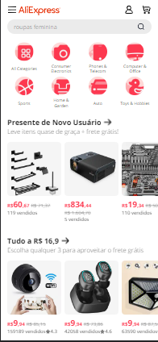
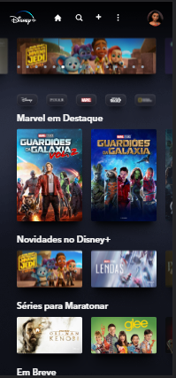

White Space and Clean Design
CNN News
CNN News WebsiteCNN's website uses white space and a clean design very well, by doing this the site manages to separate the news and emphasize some news using only a larger font size instead of a larger page style. The page in general is simple and uses conservative fonts, few colors and images related to the news. In a general context, the site clings to its purpose, which is to report.
Alignment
Aliexpress
Aliexpress Website The Aliexpress website uses the principle of alignment a lot as it needs to separate products from different sectors on its website. I noticed that the alignment is very well used because despite having many products from different categories, it is possible to distinguish well and navigate a category in a simple way and without getting lost in the infinity of products.
Contrast
Disney Plus
Disney Plus Website The contrast used on Disney's streaming website is very well employed, the background contrasts very well with the text and even with the cover of the films. The use of this principle makes the choice of entertainment pleasant and in this way people spend more time consuming the service.